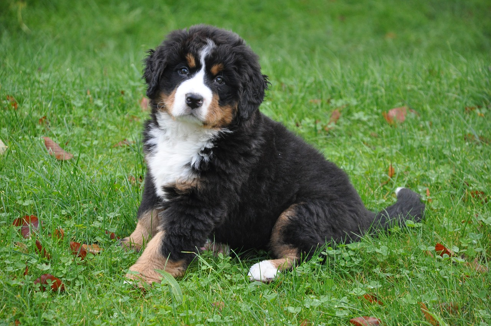
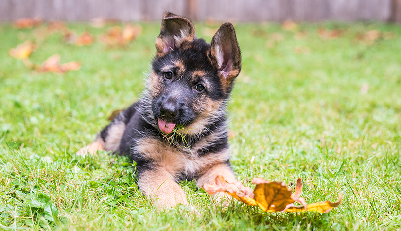

Kutyák fiatalon és felnőten
 |
A labrador retriever nagyfokú vízszeretete miatt terjedt el az a legenda, amely szerint az újfundlandi és a vidra keresztezéséből származik. Őseit új-fundlandi halászok hozták magukkal Angliába, ahol céltudatos tenyésztőmunkával a világ egyik legkiválóbb vadászebét faragták belőle. A retriever szó a retrouve szóból származik, jelentése: visszahozni, apportírozni. Ez a tulajdonság nagy előny. Ez egy veleszületett készség, a labradornak olyan könnyed a fogása, hogy akár egy tojást is elhoz anélkül, hogy eltörné, éppúgy, mint közeli rokona, a golden retriever. A labradornak rövidebb, tömöttebb a szőre, mint a goldennek, de mindkettőjük lételeme a víz. Kiegyensúlyozott, nagyon életrevaló, kitűnő orrú, puha szájú, vízimádó kutya, jó alkalmazkodó képességű, rendkívül odaadó kísérő. Társaságkedvelő kutya, az agresszivitás és a félénkség egyaránt távol áll tőle. Nagyon értelmes állat, szeret a gazdájával és a gazdájának dolgozni. Engedelmes, készséges kutya fajta. Játékos, kitűnő szaglású. A család legideálisabb kutyafajtája. A rideg tartást nem szereti, a családi környezetben jól érzi magát. |
|---|---|
|  | A berni pásztorkutya eredetileg általános gazdasági kutyaként tartották, de a múltban mint igavonó állatot is használták. Nyugodt, kiegyensúlyozott, vidám és barátságos kutya. Noha kifejezetten éber, gazdáját, családját és otthonát megvédi minden rossz szándékú behatolótól, általában békésen viselkedik. Mély hangú ugatását csak akkor hallatja, ha komoly baj van. Figyelemmel kíséri, hogy mi történik körülötte, értelmi képességei jóval átlag felettiek. Azt is hamar megérzi, hogy milyen kedélyállapotban van a gazdája és ehhez mérten viselkedik. Gazdájához és családjához hűséges, készséges és többnyire engedelmes is. A berni pásztorkutya rendszerint csodálatos játszótárs a gyerekek számára, akiket meg is védelmez. A macskákkal és egyéb háziállatokkal is jól megfér, mivel a vadászösztön szinte teljesen hiányzik belőle. Baj esetén gazdája mindig számíthat rá. A család barátaival szemben békés és barátságos. Ha idegen érkezik a házhoz, figyeli, hogyan fogadja a gazda, és ennek megfelelően reagál ő is. Egyes példányai hatalmaskodóan viselkedhetnek más kutyákkal, de a többség gond nélkül együtt tud élni fajtársaival. |
|  | A német juhászkutya Németországból származó nagy termetű kutyafajta. Okos, kedves, játékos kutya, és mindemellett hűséges társ. Gyakran alkalmazzák nyomozó-, mentő- és vakvezető kutyaként, de ideális háziállat lehet egy családnak is, mert jól kijön a gyerekekkel, akik többnyire szintén szeretettel viszonyulnak hozzá. Intelligens, mozgékony, kiegyensúlyozott. Szinte mértéktelen a temperamentuma, ennek ellenére engedelmes, figyelmes, elfogulatlan, a feladatokat jókedvűen végzi. Kellemes társ a háznál, imádja a gyermekeket, barátságos a háziállatokhoz. Ideális munkakutya, nagyon nehéz helyettesíteni. Igen értelmes és munkaszerető fajta. Észreveszi, sőt meg is érti, mi zajlik a környezetében, s természetes feladatának tekinti a családtagok, az otthon és család tulajdonának védelmét. Rendkívül hűséges, gyengéd, barátságos és magabiztos. |